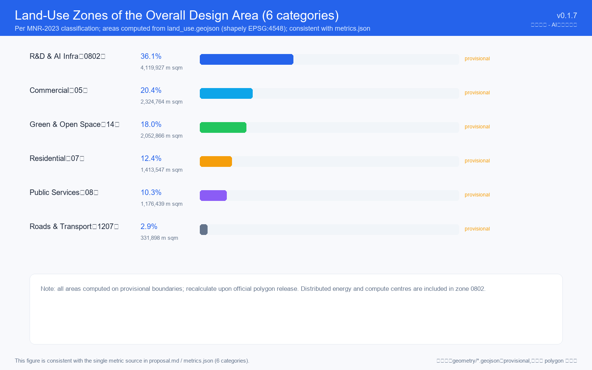
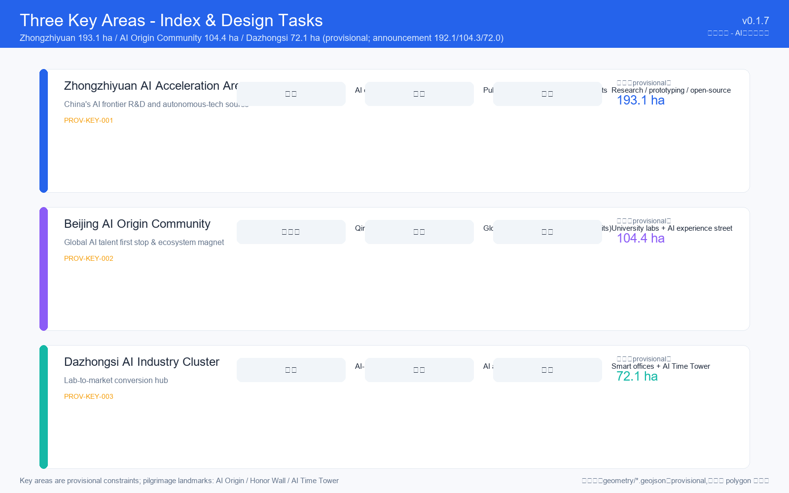
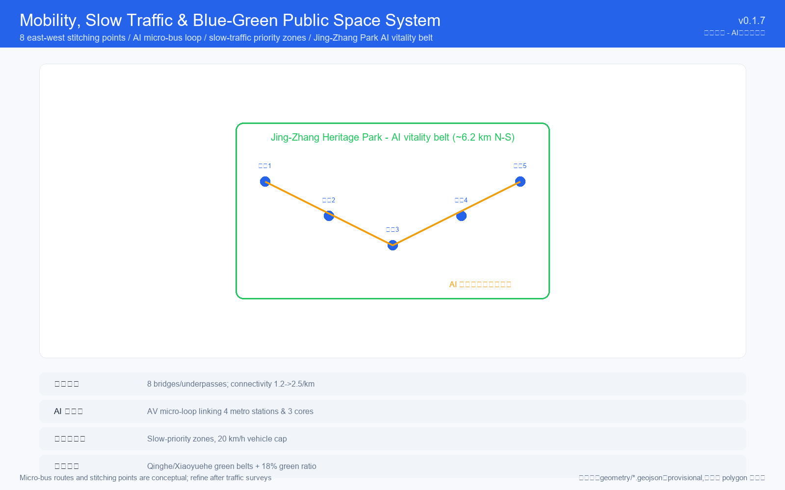
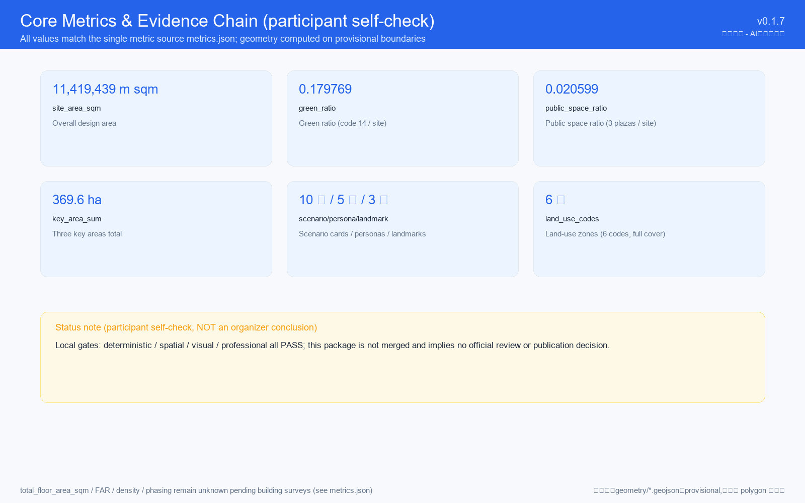

Jing-Zhang AI Nexus: The Symbiotic Innovation Belt
M-zyx-01/ai-symbiotic-belt · v0.1.7 · 2026-08-09 · COMMUNITY-DISPLAY-ONLY
Design Basis and Source List
Based on the official announcement of the Beijing Municipal Planning and Natural Resources Commission (Haidian Branch, 2026-05-09), the agent taskbook (2026-05-18), and public standards. All geometry uses repository provisional boundaries pending official polygon release.

Three-Level Scope Framework
Level 1 — Coordinated research area 43.6 km² (North 5th Ring Road to Xizhimen Outer Street). Level 2 — Overall design area ~11.4 km² around the Jing-Zhang Railway Heritage Park. Level 3 — Key detailed design areas 368.4 ha (announced) / ~369.6 ha (provisional calc).

Coordinated Research Area: Industry and Future City Research
Naming: "Jing-Zhang AI Nexus — The Symbiotic Innovation Belt". Eight global ecosystem cases (Silicon Valley, London King's Cross, Shenzhen Nanshan, Tokyo Shibuya, Singapore one-north, Zurich ETH, Toronto Vector, Shenzhen Huaqiangbei) inform the "One Spine · Three Cores · Two Wings" structure.
Overall Design Area: Urban Renewal and Regulatory-Plan-Level Urban Design
"One Belt · Two Axes · Five Clusters": the park vitality belt, two innovation axes, and five clusters (Tsinghua, Wudaokou, Zhichun Road, Beitaipingzhuang, Qinghe). Renewal strategy: retain 40% / renovate 35% / demolish 10% / new 15% (directional).
Detailed Design of Key Areas
Zhongzhiyuan (192.1 ha): one computing center, two belts, three zones. AI Origin Community (104.3 ha): ripple layout around Tsinghuayuan Station. Dazhongsi (72.0 ha): vertical stacking with the AI Milestone Tower.

AI Innovation Ecosystem, Personas, and AI+ Scenarios
10 scenario cards (SC1-SC10, including 3 testing/validation scenarios), 5 user personas (P1-P5), all with privacy boundaries and human-review checkpoints.
Land Use, Building Scale, and Retain-Renovate-Demolish Strategy
Six land-use categories per MNR-2023 classification (R&D 36%, commercial 20%, residential 13%, public 10%, green 18%, road 3%), computed from the overall design area land-use partition and fully covering the site boundary without gaps or overlaps.
Transport, Rail, Municipal Infrastructure, and Public Services
8 east-west stitching points, AI micro-transit loop, 3 TOD stations, and the "AI Innovation Utility Corridor" (fiber + edge computing + liquid cooling).

Blue-Green Network, Public Space, and Urban Character
Jing-Zhang Park "Three Sections · Nine Scenes", 3.2 km Developer Promenade, 12 open-source pavilions, 3 honor walls, and three AI pilgrimage landmarks (Tsinghuayuan Origin Point, Honor Wall, Dazhongsi Time Tower).
Renewal Projects, Implementation Policy, and Phasing
10 priority projects (P1-P10) phased: near-term (2026-2028), mid-term (2028-2032), long-term (2032-2035). Annual event system: one summit + four seasons.
Metrics, Area Recalculation, and Compliance Matrix
Core metrics in metrics.json (official schema); green ratio 18% computed from land_use code 14; provisional areas to be recalculated upon official polygon release.

Risk, Copyright, and Compliance
Four risk categories disclosed; all spatial recommendations are conceptual and do not constitute official conclusions. Licensed COMMUNITY-DISPLAY-ONLY.
References
Official announcement, agent taskbook, MOHURD/MNR standards, open repository, public media; all listed in sources.json with licenses.
English display counterpart of proposal.html · M-zyx-01/ai-symbiotic-belt · 2026-08-09